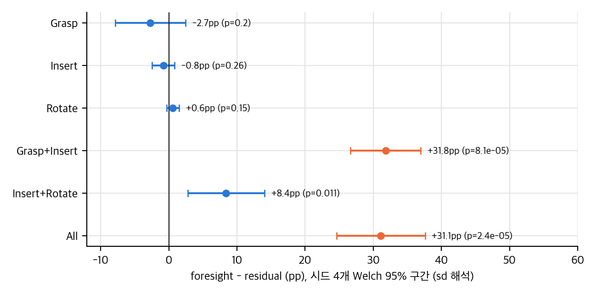
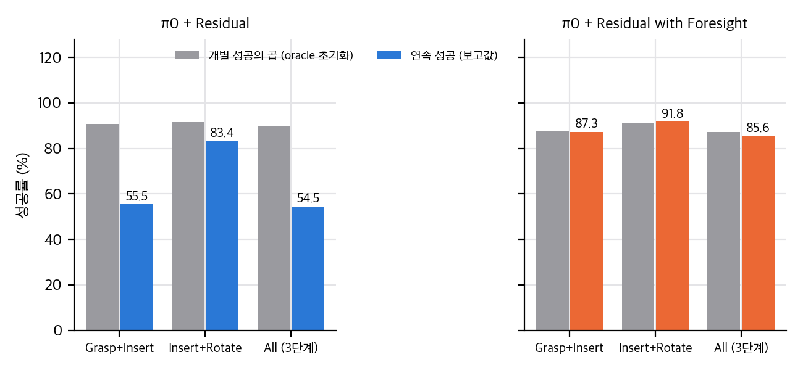
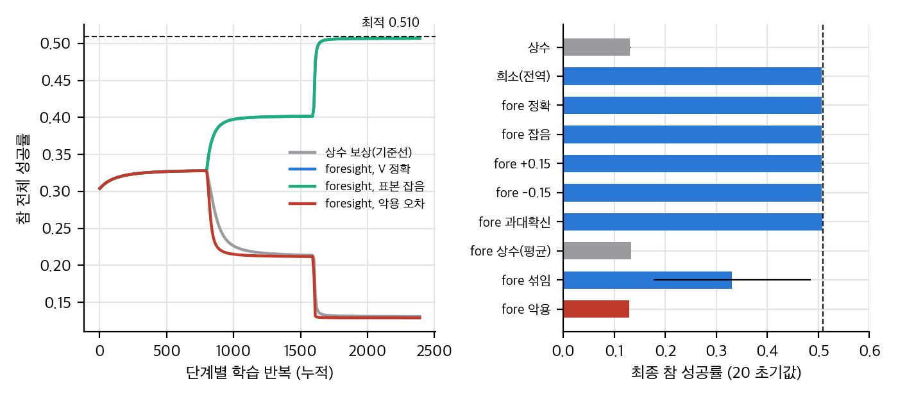
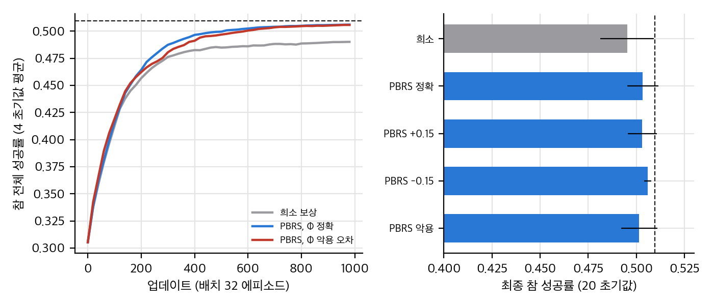

03 §1).03 §3). 다만 oracle 초기화의 한계가 있습니다.03 §2.3). 가치가 틀리면 목적이 바뀝니다. 3단계 체인 toy에서 불안정한 잡기 행동의 가치만 0.99로 부풀리면 참 성공률이 0.507에서 0.129로 떨어졌습니다(03 §4.2). PBRS 형태는 같은 오차에서도 최종 정책을 지켰습니다.03 §1.3). 보정, AUC, 독립 평가가 없고, Table III 점수는 학습에 쓴 같은 예측기로 잰 값입니다(순환, 04 C13–C14).03 §4.2).04 §4).paper/paper.pdf, 추출 텍스트 paper/paper.txt. 판본은 v1 하나뿐입니다.재계산 코드: analysis/table_check.py → table_check_results.json. toy: analysis/shaping_toy.py → shaping_toy_results.json. 그래프: analysis/plot_figures.py → report/figures/. 모두 CPU, numpy 1스레드.

직접 계산: 열별 foresight − residual 차이와 Welch 95% 구간(시드 sd 해석).
논문은 "평균 ± 표준편차"를 쓰고 시드는 4개다. 표준편차가 시드 간 sd(ddof=1)인지 평균의 표준오차(SEM)인지 본문에 없어서 두 해석을 모두 계산했다.
| 열 (foresight 대 residual) | foresight | residual | 차이 (pp) | Welch p (sd 해석) | 95% 구간 (sd) | p (SEM 해석) | Holm (sd, 6열) |
|---|---|---|---|---|---|---|---|
| Grasp | 95.7 ± 3.3 | 98.4 ± 0.6 | −2.7 | 0.20 | [−7.9, 2.5] | 0.48 | 0.46 |
| Insert | 91.4 ± 0.6 | 92.2 ± 1.1 | −0.8 | 0.26 | [−2.5, 0.9] | 0.55 | 0.46 |
| Rotate | 99.8 ± 0.4 | 99.2 ± 0.6 | +0.6 | 0.15 | [−0.3, 1.5] | 0.44 | 0.46 |
| Grasp+Insert | 87.3 ± 1.3 | 55.5 ± 3.4 | +31.8 | 8×10⁻⁵ | [26.7, 36.9] | 0.001 | 4×10⁻⁴ |
| Insert+Rotate | 91.8 ± 3.3 | 83.4 ± 3.2 | +8.4 | 0.011 | [2.8, 14.0] | 0.12 | 0.043 |
| All | 85.6 ± 3.9 | 54.5 ± 3.6 | +31.1 | 2×10⁻⁵ | [24.6, 37.6] | 0.001 | 1×10⁻⁴ |
| 방법 | 시드당 128 기대 sd | 시드당 512 기대 sd | 관측 sd |
|---|---|---|---|
| foresight (85.6) | 3.1 | 1.6 | 3.9 |
| residual (54.5) | 4.4 | 2.2 | 3.6 |
| π0 end-to-end (54.9) | 4.4 | 2.2 | 5.3 |
관측 sd는 "시드당 128"의 이항 기대와 비슷하다. 그렇지만 시드 간 변동이 더 있을 수 있으므로 어느 쪽인지 단정할 수 없다. 논문에 "512"의 의미를 물어야 한다.
| 경계 | 정확도 (Wilson 95%, n=256) | 다수 기준 (Wilson 95%) | 차이 | 근사 z, p (n=256) | 근사 z, p (n=512) |
|---|---|---|---|---|---|
| Grasp→Insert | 86.2 [81.6, 90.0] | 73.9 [68.1, 78.8] | +12.3 pp | 3.5, 4×10⁻⁴ | 5.0, 6×10⁻⁷ |
| Insert→Rotate | 93.9 [90.1, 96.1] | 90.4 [86.0, 93.3] | +3.5 pp | 1.5, 0.14 | 2.1, 0.037 |
단계 k가 처음 성공하는 시점을 τ, 그때의 상태를 s_τ라 하자. 하류 정책 π_{k+1:K}가 고정되어 있고 환경이 마르코프이면, 전역 성공 G의 조건부 기대는 다음과 같다.
E[G | F_τ] = 1{τ < ∞} · V_{k+1:K}(s_τ)
따라서 E[G] = E[1{τ<∞} V_{k+1:K}(s_τ)]이다. 식 4가 이것과 같으려면 보상이 τ에서 한 번만 주어져야 한다(γ = 1). 식 4와 식 9는 β_k(s_{t+1})를 매 스텝 곱한다. 성공 상태가 여러 스텝 유지되면 V가 그만큼 여러 번 더해져 이 등식이 깨진다. 같은 문제가 상수 보상 기준선에도 있다(성공 유지 시간 보상). 논문은 종료 조건을 기재하지 않았다(01 §6-1).
2.1의 등식에서 단계 k의 기대 기울기는 다음과 같다. 하류가 고정되면
E[∇log π_k(a_k) · R] = E[∇log π_k(a_k) · x_k V(a_k)]
따라서 정확한 V에서 곱셈 foresight 보상은 "하류까지 굴린 전역 희소 보상"의 기대 기울기와 같다. 차이는 분산뿐이다. foresight는 V를 한 번에 주고, 전역 희소 보상은 하류 롤아웃 한 번으로 주므로 분산이 크다. 논문 Sec. V-B가 "온라인 MC는 불편하지만 분산이 크다"고 쓴 것과 맞는다. 예측기는 이 기대값을 학습된 함수로 바꾸는 장치로 볼 수 있다.
toy에서 확인: 정확한 V로 단계 0의 기대 기울기 차이의 최댓값은 3.5×10⁻¹⁷이다(_check_foresight_equals_sparse_expected_grad).
V_{k+1:K}(s) − V_{k+1}(s)는 단계 k+1 성공 이후의 성공 확률이 상태 s에 따라 달라지는 정도다. 이것이 0이면 근사가 정확하다. 논문 조건 (b)는 "k+2 이후 성공률이 k+1 성공에 조건부로 일정"이다. Table II로 간접 점검하면, 잔차 정책의 연속 Insert+Rotate(83.4)는 단계 Insert oracle(92.2)보다 낮으므로 Insert 이후 Rotate 성공이 일정하지 않다는 신호다. 다만 oracle 초기화와 연속 실행은 초기 분포가 달라서 직접 비교는 불완전하다(§4). Grasp 경계 예측기는 이 근사에 기대므로, 이 오차가 큰 경계일수록 foresight 보상의 의미가 흐려진다. 논문은 이 근사 오차를 측정하지 않았다.
레이블 y_i = κ_i/K_rep에서 기울기는 Σ_i (κ_i/K − p_φ(o_i)) ∇logit이며, 이는 soft-label 교차엔트로피와 같다. 레이블 분산은 p(1−p)/K_rep이다. K_rep = 5이면 p = 0.5에서 표준편차가 0.22다. 이 잡음은 N이 커지면 평균으로 줄지만, 상태마다 다른 p를 K_rep = 5로 추정하는 것이므로 표본 N(2,560)보다 K_rep이 개별 상태의 정확도를 제한한다. 논문은 K_rep 민감도를 보고하지 않았다.
레이블 하나에 하류 롤아웃 K_rep = 5, 최대 200스텝이므로 경계당 최대 약 2,560 × 5 × 200 ≈ 2.6×10⁶ 스텝이다. 시뮬레이션 스텝 수는 논문에 기재가 없어 실제 비용은 알 수 없다. 예측기 학습은 5분 미만(Sec. VI-C)이다.

직접 계산: 단계 oracle 성공의 곱과 연속 성공(보고값)의 비교. 세 방법.
독립 가정이면 연속 성공 ≈ 단계 oracle 성공의 곱이다. 논문의 oracle 값으로 계산했다.
| 방법 | G×I 곱 | G+I 보고 | I×R 곱 | I+R 보고 | G×I×R 곱 | All 보고 |
|---|---|---|---|---|---|---|
| π0 chained | 39.8 | 37.1 | 42.7 | 61.5 | 37.2 | 41.4 |
| 잔차 | 90.7 | 55.5 | 91.5 | 83.4 | 90.0 | 54.5 |
| foresight | 87.5 | 87.3 | 91.2 | 91.8 | 87.3 | 85.6 |

직접 계산(toy): 단계별 학습 곡선(왼쪽)과 추정기 오차별 최종 참 성공률(오른쪽). 점선은 최적 0.510.
| 방법 | 최종 | 최적과의 차 | 최적의 95%에 도달 |
|---|---|---|---|
| 상수 보상 (단계별 기준선) | 0.131 ± 0.000 | −0.378 | 0/20 |
| 전역 희소 보상 (단계별, 하류 고정) | 0.507 ± 0.000 | −0.002 | 20/20 |
| foresight, V 정확 | 0.507 ± 0.000 | −0.002 | 20/20 |
| foresight, 표본 잡음 | 0.507 ± 0.000 | −0.002 | 20/20 |
| foresight, 편향 +0.15 / −0.15 | 0.507 / 0.507 | −0.002 / −0.003 | 20/20 |
| foresight, 과대확신 ×3 | 0.507 | −0.002 | 20/20 |
| foresight, 상수(평균) 보상 | 0.133 ± 0.000 | −0.376 | 0/20 |
| foresight, 섞인 V̂ | 0.331 ± 0.154 | −0.179 | 5/20 |
| foresight, 악용 오차 | 0.129 ± 0.000 | −0.381 | 0/20 |
| 끝까지 희소 보상 (표본) | 0.495 ± 0.014 | −0.014 | 13/20 (중앙값 356 업데이트) |
| 끝까지 PBRS, Φ 정확 (표본) | 0.503 ± 0.008 | −0.006 | 18/20 (중앙값 267) |
| 끝까지 PBRS, Φ +0.15 | 0.503 ± 0.008 | −0.007 | 18/20 (중앙값 277) |
| 끝까지 PBRS, Φ −0.15 | 0.506 ± 0.002 | −0.004 | 20/20 (중앙값 300) |
| 끝까지 PBRS, Φ 악용 | 0.501 ± 0.009 | −0.008 | 17/20 (중앙값 275) |

직접 계산(toy): 끝까지 학습(희소 대 PBRS)의 곡선과 최종 성공률. PBRS는 Φ 오차에서도 최종 정책을 지킨다.
paper/paper.pdf.JaySparrow/foresight-residual-rl은 Academic Project Page Template 그대로이고 플레이스홀더만 남아 있습니다(코드, 학습 스크립트, 설정 없음). 그래서 논문 ↔ 코드 대조(D 항목) 대신 다음을 했습니다.
analysis/table_check.py (03 §1, §3)analysis/shaping_toy.py (03 §2–4)01판정 기호: ✅ 맞음(보고값·산술 일치), ⚠️ 맞지만 조건이나 표현에 문제, ❌ 틀리거나 근거 없음, ❓ 검증할 수 없음(정보 부족), ℹ️ 정보.
| # | 주장 (출처) | 점검 | 판정 |
|---|---|---|---|
| C1 | 3단계 나사 조립 전체 성공 85.6%, 잔차 RL 54.5% (초록, Table II) | 보고값과 일치. 시드 4개, sd 3.9 / 3.6, Welch p ≈ 2×10⁻⁵ (sd 해석) | ✅ (시드 정의 03 §1.2) |
| C2 | "VLA baselines"보다 높다 (초록) | π0 end-to-end 54.9 ± 5.3 대비 +30.7 pp, Welch t ≈ 9.3(근사) | ✅ |
| C3 | 단계별 성공은 "변하지 않는다" (초록) | oracle 값 차이 Grasp −2.7, Insert −0.8, Rotate +0.6. 모두 p > 0.15 | ⚠️ "차이가 검출되지 않음"이 정확 (03 §1.1) |
| C4 | "+31.1%" 개선 (기여 3) | 절대 차이 31.1 %p. 상대 증가 57% | ⚠️ 단위 표기 |
| C5 | 상수 보상 대비 "over 30%" (VII-B) | 31.1 %p | ⚠️ 같은 표기 문제 |
| C6 | 잔차 RL은 end-to-end와 차이가 없다 (VII-B) | 54.5 대 54.9, p = 0.91 | ✅ |
| C7 | 단계 Insert 성공이 "두 배" (45.7 → 92.2) | 2.02배 | ✅ 단, 같은 과제 oracle 값 비교 |
| C8 | Grasp→Insert 경계에서 연속 성공 55.5 → 87.3 (+31.8%) (VII-B) | 값 일치. +31.8 %p, 상대 57% | ✅ / ⚠️ 단위 |
| C9 | chained π0(41.4)가 end-to-end(54.9)보다 낮다 (VII-B) | Welch t ≈ −4.3, p ≈ 0.008 | ✅ |
| C10 | 예측기 정확도가 두 경계 모두 다수 기준을 넘는다 (Table I) | Grasp→Insert: 86.2 대 73.9 (n=256 가정 z ≈ 3.5). Insert→Rotate: 93.9 대 90.4 (z ≈ 1.5, p ≈ 0.14) | ⚠️ 두 번째 경계는 검정 세트가 256이면 유의하지 않음 (03 §1.3) |
| C11 | Grasp→Insert의 정확도 격차가 "종료 상태를 구분한다"는 증거 (VII-A) | 정확도 격차는 구분 능력의 증거가 약함. AUC, 보정 없음 | ❌ 근거 부족 |
| C12 | 예측기는 연속 곱셈기이고 임계 정확도는 보수적 대리값 (VII-A) | 맞는 말이나 보정(ECE)·로그우도 없이 연속값의 품질을 말할 수 없음 | ⚠️ |
| C13 | 상수 보상 잔차는 종료 상태 점수를 낮춘다(0.64 → 0.32; 0.97 → 0.86) (Table III) | 값 일치. 같은 예측기로 잰 점수라 독립 증거가 아님 | ⚠️ 순환 (01 §6-4) |
| C14 | foresight 정책이 Grasp 종료 점수를 가장 높인다(0.73) (Table III) | 값 일치. 같은 조건의 순환 | ⚠️ |
| C15 | foresight 정책이 Insert 종료 품질을 잔차보다 더 보존(0.91 대 0.86) (VII-C) | 값 일치. 기본 π0(0.97)보다는 낮음 | ✅ (잔차와의 비교만) |
| C16 | 잔차 정책이 종료 상태 분포를 학습 중에 크게 옮기지 않는다 (V-C, α = 0.1) | 측정 없음. 분포 이동 지표 없음 | ❓ |
| C17 | 예측기는 기준 정책 분포에서 학습하므로 잔차 정책의 방문 상태에 적용 가능 (V-C) | 이동 측정 없음. toy §4에서 예측기 오차가 있을 때 보상 해킹이 생김 | ❓ (메커니즘 위험) |
| C18 | 온라인 MC 가치는 불편하지만 분산이 크다 (V-B) | 정확한 V에서 foresight 보상의 기대 기울기 = 전역 희소 보상의 기대 기울기(차이 3.5×10⁻¹⁷). 분산 주장은 이론상 맞음 | ✅ (03 §2.3) |
| C19 | 곱셈 foresight 보상은 "국소 수정"이고 최적 정책을 바꾸지 않는다 (IV-B, 기여 1) | 정확한 V에서만 전역 목적과 같다. V 오차가 있으면 목적이 바뀐다. toy 악용 행에서 0.507 → 0.129 | ❌ 일반적 보존은 성립하지 않음 (03 §2.2, §4) |
| C20 | 식 6의 1단계 근사는 (a) 마지막 다음 단계 또는 (b) 상수 조건에서 정확 (V-B) | (a)는 Insert→Rotate 예측기에 해당. Grasp→Insert는 근사. (b) 확인 불가 | ⚠️ 근사 오차 측정 없음 |
| C21 | 이항 NLL은 "보정된 확률"을 준다 (V-C) | 적절한 점수규칙이라 표현력이 충분하면 맞음. 보정 검사 없음 | ⚠️ |
| C22 | 예측기 학습은 5분 미만 (VI-C) | 자료 크기(2,560×2 쌍)는 작음. 하드웨어 기재 없음 | ❓ |
| C23 | 평가에서 예측기는 쓰지 않는다 (VII-B) | 설계 진술. 평가 롤아웃은 보상과 독립 | ✅ |
| C24 | 정성 사례(Fig. 3)는 두 방법의 차이를 보여준다 | 단일 사례. 통계 없음. 시작 상태와 과정은 맞음 | ⚠️ 일화 |
| C25 | 기준 π0는 단계별 미세조정, end-to-end π0 학습 데이터는 기재 없음 (VI-B) | end-to-end 기준선이 같은 데이터를 쓰는지 알 수 없음 | ❓ |
| C26 | "512 episodes across 4 random seeds" (VII-B) | 시드당 512인지 총 512인지 불명. 두 해석에 따라 검정력이 다름 | ❓ (03 §1.2) |
| C27 | 단계 길이 160/200/200, 최대 560 스텝, 20 Hz (VI-A) | 기재 값과 일치. 합 560은 맞음 | ✅ |
| C28 | 예측기 학습 데이터 N = 2,560, K_rep = 5 (Alg. 2, VI-C) | 기재 값 확인. K_rep 민감도 없음 | ✅ / ❓ (민감도) |
| C29 | 한계: 시뮬레이션만, 실물 비용이 장애 (VIII) | 맞는 한계 진술. 실물 비용 추정 근거 없음 | ✅ / ℹ️ |
| C30 | 방법이 "최적 정책에 의해 국소 학습과 전역 성공을 정렬한다" (기여 1) | C18–C19와 같은 조건. 전역 목적과의 정렬은 V 정확도에 달림 | ⚠️ 조건 생략 |
arxiv.org/licenses/nonexclusive-distrib/1.0/(CC BY 아님). 2026-11-10 확인.publish/, report_public.pdf)은 우리가 직접 그린 그래프와 논문 수치 인용(출처 표기)만 쓴다. 논문에서 가져온 그림은 report/figures/paper_*.png(개인용)이며, 공개 산출물에 들어가면 안 된다.불가능합니다. 코드, 설정, 시뮬레이션 자산(나사·너트 메시, 전문가), 학습 스크립트가 모두 공개되지 않았습니다. 저장소에는 템플릿만 있습니다. 재현에 필요한 빈칸은 §2의 13개 항목이고, 그중 시드 정의와 종료 조건, 예측기 레이블 정책은 결과 해석을 바꿀 수 있습니다.
| 단계 | 판단 |
|---|---|
| 표 재계산, 유의성, 곱 검사 | ✅ 완료 (table_check.py, 수 초) |
| 3단계 체인 toy (곱셈 대 PBRS 대 희소, 추정기 오차) | ✅ 완료 (shaping_toy.py, 약 70초, 1스레드) |
| Isaac Gym 나사 조립 환경 | ❌ Isaac Gym은 NVIDIA CUDA GPU가 필요합니다(외부 지식, 이 세션에서 설치 여부 확인 안 함). 이 맥에서는 실행 불가 |
| π0 미세조정(3개 단계 정책) | ❌ torch 미설치. 3B급 모델 학습은 GPU 필요. MPS는 미확인 |
| DINOv2 + LoRA 예측기 학습 | ❌ 레이블 데이터가 시뮬레이션에서 나와야 함. 공개 데이터 없음. 설치와 다운로드 금지 규칙 |
| 잔차 PPO | ❌ 시뮬레이션 필요 |
| 소형 대체 실험(같은 구조의 과제를 CPU 시뮬레이터에서) | ❌ 패키지 설치 필요(이번 작업 제약). toy 수준까지만 가능 |
노력은 중간에서 큼입니다.
공식 코드가 없어 재현할 수 없고, 이 맥에서는 시뮬레이션과 π0 학습이 불가능하다. 아이디어(곱셈 보상과 예측기)는 구현이 짧지만, 시뮬레이션 자산과 예측기 검증 기준이 없어서 결과를 그대로 믿기는 어렵다.
| 연구 | 관련 이유 | 이 논문과의 차이 |
|---|---|---|
| MAXQ 완성 함수 [17] | 같은 양(하류 기대 반환)을 다룸 | TD로 함께 학습하므로 비정상성이 생기고, 고정 VLA 기반에서는 쓰기 어려움. 이 논문은 몬테카를로 오프라인 추정 후 예측기로 증류 |
| 전역 희소 보상으로 단계 학습 (온라인 MC) | 저자들도 Sec. V-B에서 "불편 추정"이라고 씀 | 분산이 크고 시뮬레이션 비용이 큼. 이 논문의 곱셈 보상은 온라인 MC의 기대값을 예측기로 대체한 것으로 볼 수 있음(03 §3) |
| 잠재 기반 보상 형성 (PBRS, Ng 외 1999) | 단계 경계 가치를 보상에 넣는 가장 표준적인 방법. 논문은 인용하지 않음 | 덧셈 형태이며 최적 정책을 보존함. 곱셈 형태는 보존하지 않음(03 §2) |
| 하류 critic 재사용 | 논문 Sec. V-B가 명시적으로 기각 | 하류 정책의 초기 상태 분포에서 학습된 값이라 상류 종료 상태에 맞지 않음 (논문 주장, 검증 안 함) |
| 초기 집합 정렬 (T-STAR, SCaR 등) | 같은 문제(핸드오프 품질) | 분포 겹침 대리 목적. 성공 확률을 직접 보지 않음 |
| 폴더 | 관계 | 비고 |
|---|---|---|
thinkworld/ (arXiv:2610.37666) |
세계 모델의 미래 예측 일치를 보상으로 GRPO 학습 | 보상이 모델 자신의 예측에 기대는 구조. 이 논문의 예측기 점수도 학습에 쓰인 같은 예측기로 평가된다는 점이 공통 위험(Goodhart). 그 연구에서는 RL 이득이 작고 설계에 민감하다는 결론을 얻었음 |
dexpolicy/ (arXiv:2610.00360) |
학습 중 행동 잡음 σ 스케줄(PPO, GRPO, FPO 적용) | 잔차나 보상 형태보다는 RL 미세조정 설계. 학습 안정성 비교의 관점 |
insertion_wm/ (arXiv:2609.28258, 분석 완료) |
잠재 세계 모델로 삽입 과제. 미지 객체 제로샷 56% | 삽입 과제의 다른 경로(모델 기반 계획). 이 논문은 모델 없이 단계 종료 상태의 가치만 예측 |
pacevla/ (arXiv:2610.25961) |
행동 청크의 실행 속도 | 보상이 아니라 실행 시간 축. 관련은 약함 |
openwam/ (arXiv:2609.07398), agentic_wam/ (arXiv:2610.30136) |
세계 행동 모델(WAM) | 예측 대상이 영상. 이 논문의 예측기는 단일 이미지에서 성공 확률을 본다 |
chronospolicy/ (arXiv:2610.13929) |
관측·행동 시각 조건 | 단계 경계 시간 정의와 연결될 수 있으나 직접 관계는 약함 |
프로젝트 페이지 jaysparrow.github.io/foresight-residual-rl는 HTTP 404다(GitHub Pages 미활성).
| 저장소 | 무엇인가 | 공식 여부 | 라이선스 | 별 | 최근 커밋 |
|---|---|---|---|---|---|
JaySparrow/foresight-residual-rl |
저자 계정의 저장소. 설명에 논문 제목과 "(IROS 2026)". 내용은 Academic Project Page Template 그대로(README와 index.html의 PAPER_TITLE, BIBTEX_CITATION_HERE, YOUR_GITHUB_USERNAME 등 플레이스홀더가 남음). 코드·데이터·학습 스크립트 없음 | 저자 계정이지만 코드는 없음 | 없음(license null) | 2 | f5f1345 (2026-07-17, "Initial commit", 단일 커밋) |
JaySparrow/IsaacGymScrew |
다른 저자 Azulay 외(arXiv:2411.06408)의 IsaacGymInsertion 포크. Robotiq 3지 그리퍼로 교체. README는 "Visuotactile-Based Learning for Insertion" | 이 논문의 코드 아님. 같은 Isaac Gym 삽입 환경의 선행 포크 | LICENSE.txt(README는 Apache-2.0 표기, GitHub 자동 판별 실패) | 0 | def15c9 (2024-12-28) |
osheraz/IsaacGymInsertion |
위 포크의 원저장소(Azulay 외) | 공식(원 저자), 이 논문과 무관 | 자동 판별 NOASSERTION, README는 Apache-2.0 | 24 | b0e6b07 (2025-05-20) |
JaySparrow/JaySparrow.github.io |
저자 개인 사이트 소스 | 무관 | — | — | c208a3a |
gh search repos "foresight residual": 위 첫 번째 저장소만 나옴. "residual RL VLA foresight": 결과 없음. "failure forecasting rhythmic insertion": 결과 없음([28] 공개 코드 없음).repo/를 만들지 않음). 그래서 04_code_verification.md가 아니라 04_claim_verification.md를 씀..scratch/에만 임시 보관, 커밋 대상 아님).